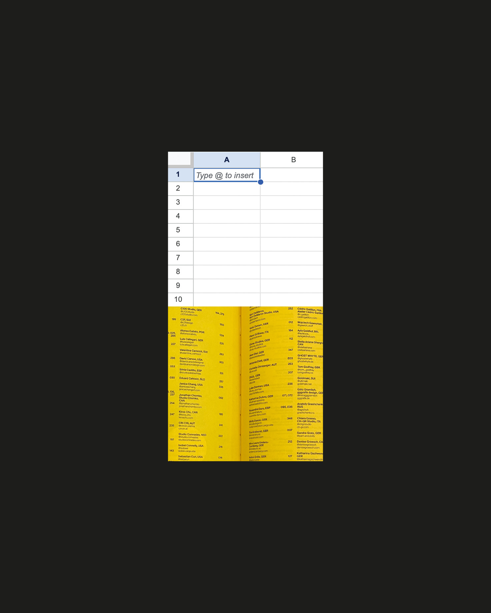
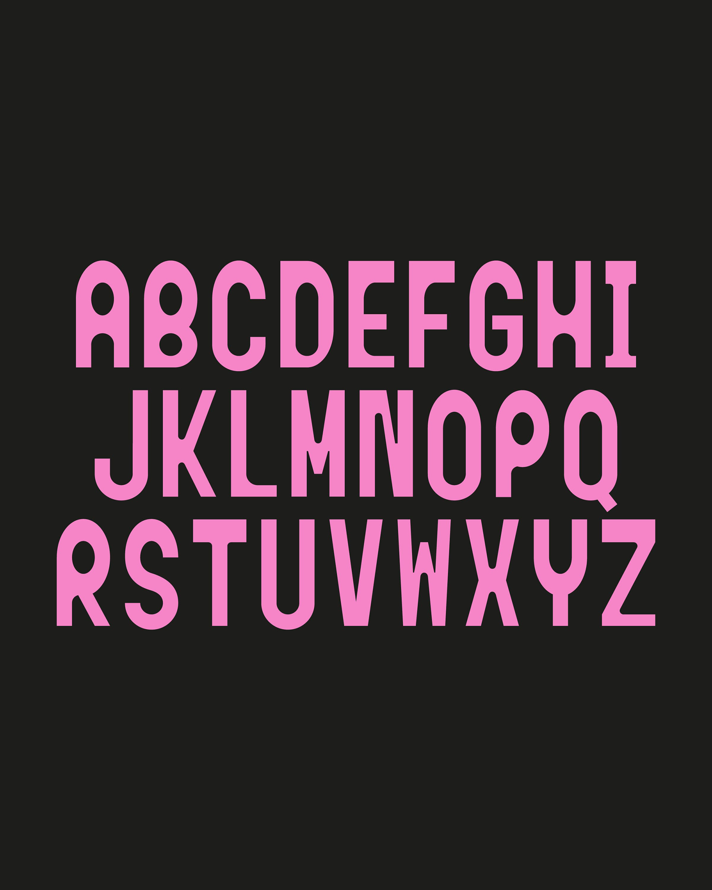
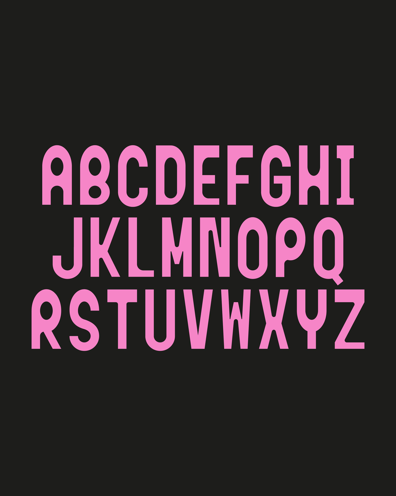
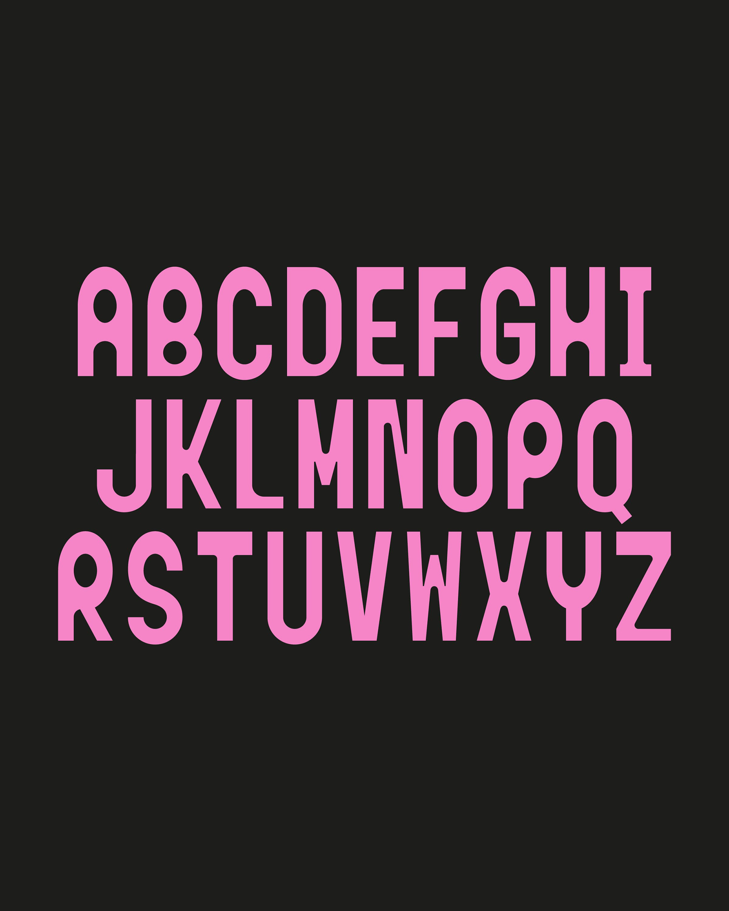
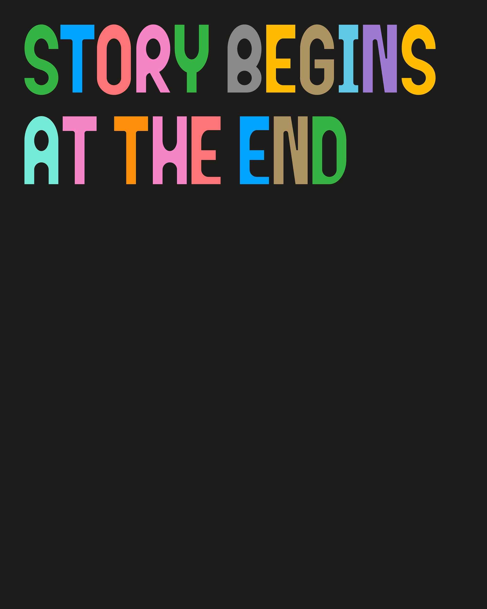

Appendix is a custom type for a theoretical magazine ‘Appendix’. The motto of it is capturing small-scale voices, bringing the extra to the center. Based on this concept, the type module was motivated by a chart format, which has X and Y axes at the edge since some books and magazines published the appendix in this layout. While usual typefaces have more counter space at the bottom, it has more counter space at the top, like an upside-down structure.
* Photos are used for educational purposes.

 




